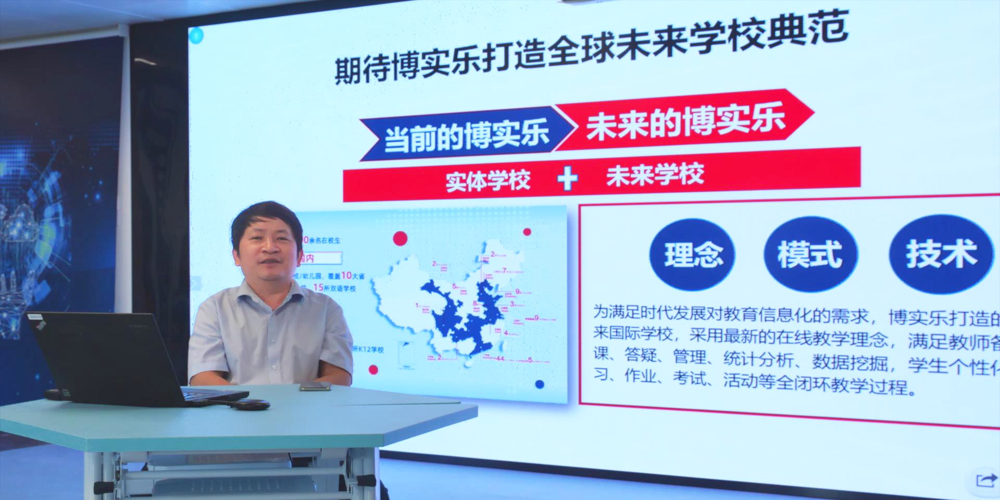
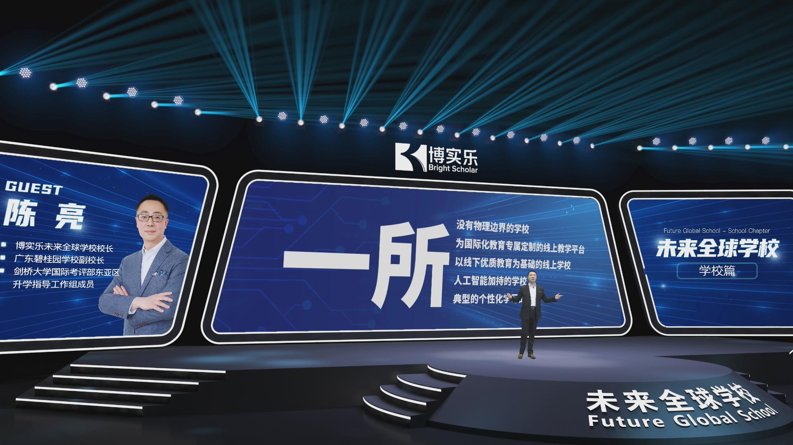

博采众长，融合共享 | 龙图教育辅助教育板块联动K12国际化学校开展多项交流合作
他山之石，可以攻玉。为进一步加强龙图教育教育集团内各兄弟单位间的交流合作，促进教育协同发展，近日，龙图...
查看详情>>2020.07.24
未来是什么样子？
2007年1月9日，在苹果公司第一代iPhone手机发布会上，全场观众看到传奇CEO史蒂夫·乔布斯在iPhone上演示包括“多点触控”等革命性功能后，爆发出了经久不息的掌声与欢呼。在那一刻，人们看见了未来是什么样子。
但谁能想到，不到5年时间，这些跨时代革新应用到了绝大多数的手机产品中，成了我们生活中的“理所当然”。而人类也正式迈进了“智能手机时代”与“移动网络时代”。
未来与变革总是在我们想象不到的时机，以想象不到的方式来到我们面前。在教育领域也是一样，我们总是习惯了“学校教育”这种模式，认为学校与教育之间几乎是可以划等号的，不管教育再怎样革新，都脱离不了学校的模式与空间束缚。直到2020年，一场疫情让变革提前到来......
首先在我们国内抗疫期间“停课不停学”的方针下，我们几乎所有的学校和教育机构都启动了“网课教学”的模式，让教育在特殊时期有秩序的进行。之后我们也看到西方国家在疫情爆发后也走上了同样的道路，纷纷关闭实体校园，开启远程线上模式。
教育领域的一场革命以我们想不到的方式来到，我们也由此可见，这一场教育的变革会让我们重新定义“教育”与“学校”的概念。那未来我们的学校会是什么样子呢？
关于未来学校的畅想
正因为这次疫情所带来的变革，我们也看到全世界的教育领域都在发生着日新月异的变化，很多过去总是觉得遥远的改变也都因为疫情开始出现在我们眼前了。在后疫情时代，“在线教育”不再是特殊时期的特殊形式，也会变成学校教育的重要组成部分。
我国在“未来教育”、“人工智能教育”等研究领域的领军人物，北京师范大学未来教育高精尖创新中心执行主任，“移动学习”教育部-中国移动联合实验室主任——余胜泉教授就针对疫情后的世界教育发展做出过以下几点展望：
“移动学习”教育部-中国移动联合实验室主任余胜泉教授
首先教学服务的空间会发生根本性的变革：学校的办学空间将不仅仅是实体空间，广阔的网络空间将会成为教育空间的重要组成部分；教学服务的资源也不将只局限于学校或区域内部，未来海量的学习资源都会来源于校外，并向所有师生开放。
其次，教师身份的属性将逐步开放；教育服务的提供者不再只限于学校里的教师，而教师服务的对象也不再只限于固定校园内的学生。我们会看到未来越来越多不同身份属性的人会担任教育服务的提供者，也会看到越来越多非学生身份的人可以接受到优质的教育服务。
虚实结合的学校教育生态将成为常态，学校和教育机构将不会再是封闭的社会单元，而是通过网络成为集体智慧聚变、并连接全球社会的节点。
英国传媒巨擘BBC曾经在研究中指出，教师这一职位是最不可能被人工智能所替代的职业之一；针对这一点，余胜泉教授认为：“人工智能不会取代教师，但是使用人工智能的教师会取代不用人工智能的教师。”
未来，教育服务的提供者与人工智能的高度协同将是一定会发生的改变。我们会看到人工智能将大大提高教育工作者的效率，也会令教育服务以更精准、更个性化的方式呈现给学生。宏观上所有的教育服务的业务流程与制度都会与人工智能结合，未来教育一定会更加智能化、个性化。
我们都在2020年看到了教育领域的变革，而这仅仅是开始而已。余胜泉教授认为，互联网和5G技术的飞速发展会使信息和数据的流通更加迅速，这会进一步加速教育系统大规模社会化协同教育服务形态的形成。
尤其是在中国5G技术基本部署完成，以及西方国家疫情环境下教育必须继续“线上模式”等外部条件下，“在线教育”将以一个前所未有的速度，快速地与传统校园教育融合。未来的校园里，不仅充满着高新的互联网技术与应用，这些东西也将师生与课堂带入无限的网络空间里。
龙图教育构筑的“未来学校”
迎接变革，着眼未来！6月16日，龙图教育教育集团召开了线上战略发布会，正式宣布“未来全球学校”项目上线。
以Internet（互联网）、Interactive（互动性）、Intelligent（智能化）——“3i理念”为主导的“未来全球学校”将会是一所没有围墙的学校，它将是一个基于互联网的全球学习中心，做到线上与线下相融合（OMO），打破传统教育模式时间与空间的束缚，为任何想要学习的人打造专属定制的个性化教育服务。
龙图教育未来全球学校校长陈亮先生在为我们介绍时说道，“未来全球学校”将会是一所具备以下五个特点的学校：

龙图教育未来全球学校校长陈亮先生
“未来全球学校”将为所有学生提供线上的教学服务，没有时间与空间的限制，所有在这个教育服务过程中的步骤都可以在线上完成。龙图教育将为完成线上课程并满足条件的学生们提供国内外实体学校所认证的毕业证书。
“未来全球学校”的教学内容将会以国际化课程为主，服务的人群主要是有出国留学计划的同学们。除了提供学术课程为，“未来全球学校”还将成为一个连接海内外的平台，为学生和老师们提供学习、讨论、咨询的渠道。
“未来全球学校”将依靠龙图教育教育集团在全球范围内百余所学校和教育机构的教育资源，以及总共超过一万名教职员工的师资力量，通过线上线下融合（OMO）的方式，为所有的学生们提供最优质的国际化教学服务。
学校的线上教育服务将有大量的人工智能加持，不管是教师还是学生，都会通过人工智能的服务，大大提高信息获取、传授以及沟通的效率。通过科技的方法，让教育变得更加高效。
“未来全球学校”将会解决传统学校教育中因为空间与时间的局限而造成的“死板”、“量产化”等弊端，通过流动化、个性化的教学服务，做到真正的因材施教；学生们在个性化的教学服务中，可以得到最科学的个人发展。
也许此时此刻的世界还面临着此时此刻的问题，但在2020年，教育的变革已经在此时此刻走到了世界的眼前。过去我们总是习惯了“背着书包去上学”，到如今互联网技术的发展，让我们可以突破限制，“把学校装进书包里”，随时随地打开，随时随地接受教育。龙图教育将从“未来全球学校”开始，引领全球教育领域的“3i革命”，将线上线下融合的OMO战略带入全球教育的发展！
制造创新工业
 分享：
分享：
他山之石，可以攻玉。为进一步加强龙图教育教育集团内各兄弟单位间的交流合作，促进教育协同发展，近日，龙图...
查看详情>>